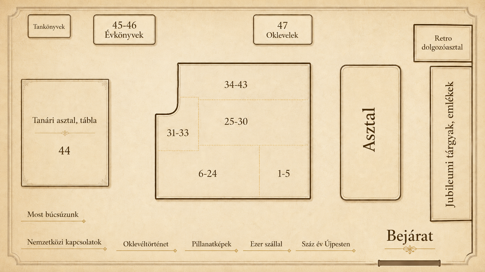

Régi szertár · digitális katalógus
Laboratóriumi és műhelygyakorlati műszerek
A kiállítás tárgyai rövid leírással, bővebb megnyitással és mini fotógalériával.
Tárlatvezetés
Tárlatvezető videó
Teremtérkép
A kiállítás térképe

Régi szertár · digitális katalógus
A kiállítás tárgyai rövid leírással, bővebb megnyitással és mini fotógalériával.
Tárlatvezetés
Teremtérkép
